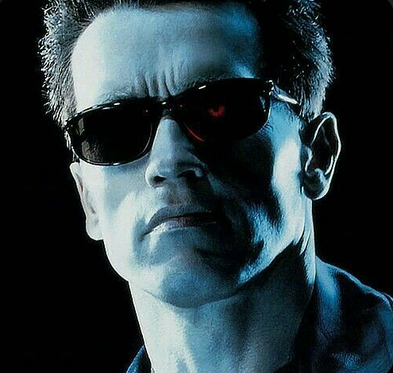
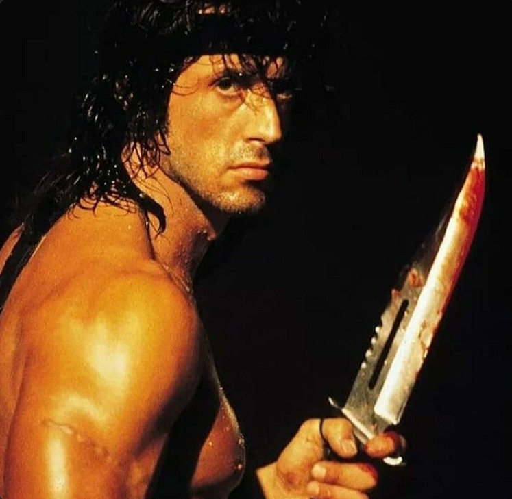
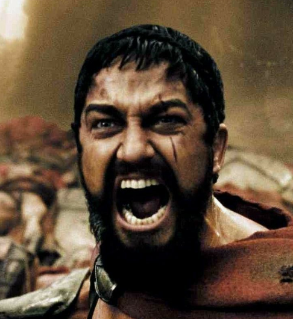
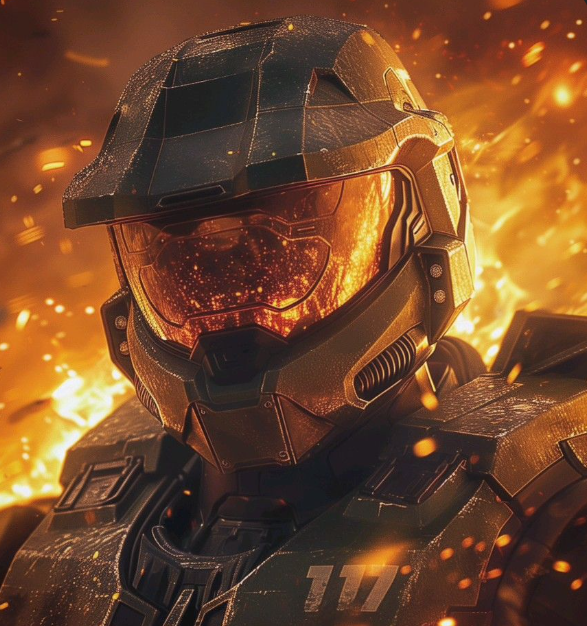
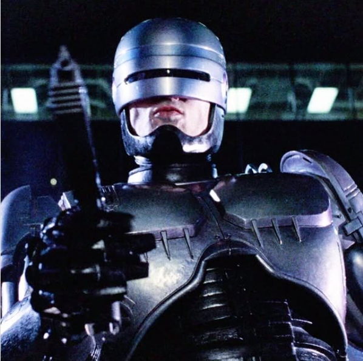
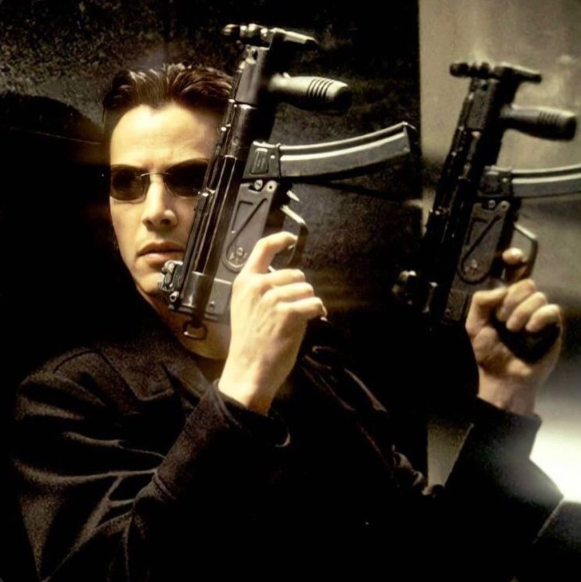
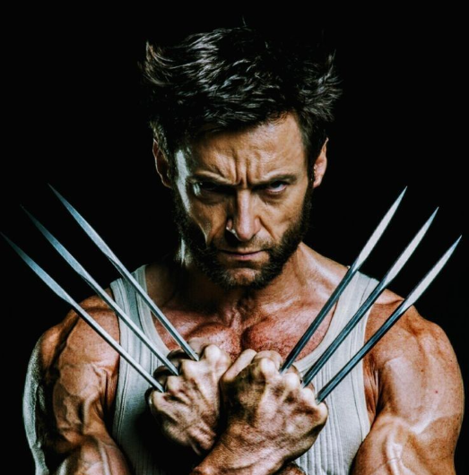
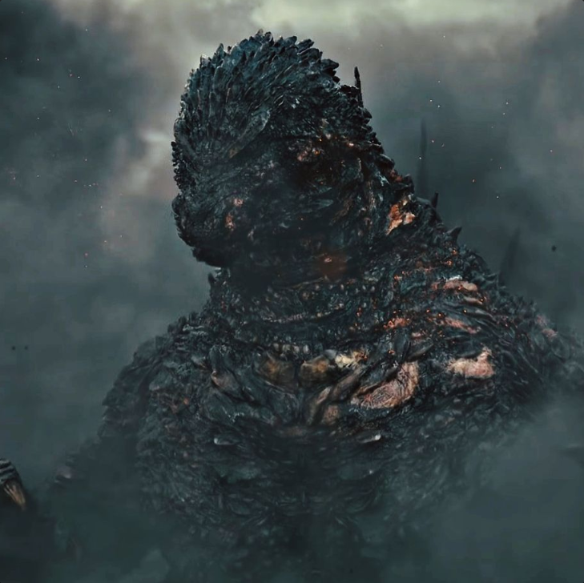

Thomas Shelby
Líder dos Peaky Blinders, uma gangue criminosa de Birmingham. Tommy Shelby é o líder inteligente e estratégico de uma poderosa família. Veterano da Primeira Guerra Mundial, ele usa sua astúcia para guiar a família através de desafios, navalhas, apostas e negócios complexos.

Walter White
Professor de química, ao ser diagnosticado com câncer, entra no comércio de metanfetamina para garantir o futuro de sua família, transformando-se em Heisenberg, um dos mais notáveis traficantes dos Estados Unidos.

Billy Bruto
Odiador número um dos super-heróis corrompidos. Líder dos The Boys, ele busca vingança contra o Homelander e a Vought por tudo que fizeram com sua esposa. Sarcástico, brutal e impiedoso, Butcher não mede esforços para eliminar supers.

Capitão Nascimento
Líder do BOPE (Batalhão de Operações Policiais Especiais) do Rio de Janeiro, é um policial linha-dura que combate o tráfico nas favelas sem piedade. "Missão dada é missão cumprida", ele representa a dureza da guerra urbana contra o crime.

Exterminador
O T-800 é um ciborgue assassino enviado do futuro pela Skynet para exterminar Sarah Connor e impedir o nascimento de John Connor, líder da resistência humana contra as máquinas.

Homem de Pedra
Todos os personagens feitos pelo The Rock são marcantes... (Menos aquele escorpião digitalizado do Egito). Que tal focar na imponência bruta de personagens implacáveis como o agente Luke Hobbs?

Rambo
John Rambo é um veterano da Guerra do Vietnã altamente treinado em guerrilha e sobrevivência. Perseguido por autoridades locais, inicia uma guerra de um homem só, expondo o trauma e abandono pós-guerra.

Rei Leônidas
O rei de Esparta que liderou 300 guerreiros contra o imenso exército persa de Xerxes na Batalha das Termópilas. Famoso por sua bravura extrema, táticas letais e o icônico grito: "This is Sparta!".

Jack Reacher
Ex-major da polícia militar do exército, Reacher vive como um andarilho sem amarras. Um investigador brilhante que resolve problemas complexos combinando dedução genial com força e brutalidade cirúrgicas.

Alma Negra
Um dos vilões mais temidos dos mares do Chapolin Colorado. Alma Negra é um pirata cruel que comanda sua tripulação com punho de ferro e uma risada sinistra de arrepiar os ossos.

Patrick Bateman
Rico, vaidoso e bem-sucedido investidor de Wall Street que esconde um lado psicótico e sádico. Comete crimes brutais por prazer, evidenciando o vazio existencial e a futilidade da elite dos anos 80.

Master Chief
John-117 é um super-soldado SPARTAN-II da UNSC treinado desde a infância para ser a arma definitiva da humanidade. Protegido por sua armadura Mjolnir, ele enfrenta ameaças interplanetárias implacavelmente.

John Wick
Um assassino lendário que havia se aposentado, mas retorna ao submundo do crime movido por uma fúria imparável após tirarem dele a última lembrança de sua falecida esposa. Conhecido como o "Baba Yaga".

RoboCop
O policial Alex Murphy é reconstruído como um ciborgue cibernético de segurança máxima após ser brutalmente executado. Enquanto combate o crime em Detroit, luta para resgatar sua antiga identidade e humanidade.

Lowrey & Burnett
A dupla dinâmica de detetives da Divisão de Narcóticos de Miami. Combinando o estilo playboy e destemido de Mike Lowrey com o perfil familiar e cauteloso de Marcus Burnett em pura ação urbana.

Saul Goodman
Advogado excêntrico e mestre na manipulação jurídica. Com sua lábia inigualável e moralidade flexível, constrói pontes perfeitas no submundo para livrar criminosos e cartéis de enrascadas com a lei.

Neo
O Escolhido do universo Matrix. Desafiando as barreiras e códigos da realidade simulada, ele domina artes marciais e dobra as leis da física para libertar a mente da humanidade do controle das máquinas.

Motoqueiro Fantasma
O Espírito da Vingança. Um justiceiro sobrenatural com crânio flamejante que caça almas corruptas usando correntes místicas e o devastador Olhar da Penitência, punindo pecados sem clemência.

Wolverine
Logan é um mutante com instintos selvagens, garras retráteis revestidas de Adamantium indestrutível e um fator de cura celular acelerado que o torna virtualmente imortal em combate.

Godzilla
O Rei dos Monstros. Um titã pré-histórico colossal despertado por radiação. Força absoluta da natureza que esmaga metrópoles inteiras e defende seu trono planetário com seu sopro atômico.